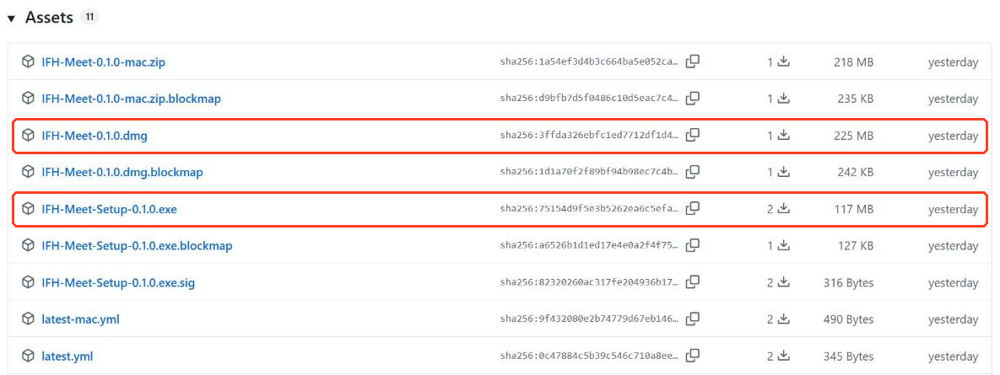
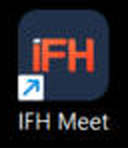
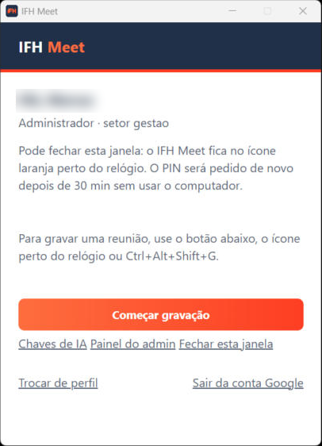
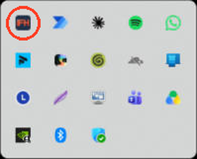

Instalar o IFH Meet
Leva uns 5 minutos. Você vai precisar da sua conta Google do Instituto e do código de primeiro acesso que o admin mandou.
Os botões levam à versão mais recente.
1. Baixe o instalador
Use os botões acima. Se preferir, abra a página de versões e, em Assets, baixe só um arquivo:
- Windows: o que termina em
.exe(IFH-Meet-Setup-…exe); - Mac: o que termina em
.dmg.

2. Instale
Windows
Abra o arquivo baixado. A instalação é sozinha e não pede senha de administrador.
No fim aparece o atalho IFH Meet na área de trabalho.

Mac
Abra o .dmg e arraste o IFH Meet para Aplicativos. Na primeira vez, o macOS avisa que não pode verificar o desenvolvedor: abra Ajustes do Sistema > Privacidade e Segurança e clique em Abrir Mesmo Assim.
3. Entre com a sua conta
- Clique em Entrar com o Google. O login abre no seu navegador: use a conta Google do Instituto. Outras contas são recusadas.
- Escolha o seu perfil.
- No primeiro acesso, digite o código que o admin mandou e crie um PIN de 6 a 12 dígitos. O PIN é pedido de novo depois de 30 minutos sem usar o computador.

4. Use no dia a dia
Pode fechar a janela: o IFH Meet fica no ícone perto do relógio (no Windows, às vezes dentro da setinha ^). Clique nele para abrir.

- Para gravar uma reunião: o botão Começar gravação, o ícone perto do relógio ou Ctrl+Alt+Shift+G. Funciona com qualquer programa de chamada.
- A transcrição aparece enquanto a reunião acontece; no fim sai um resumo com os pontos principais e os próximos passos.
- Na primeira vez que for salvar, o app abre o Google no navegador para você autorizar o Drive e escolher a pasta. O resumo e a transcrição vão para lá.
5. Atualizações
No Windows, o app procura versão nova sozinho, baixa e instala quando você fecha o IFH Meet. Ele só instala se a assinatura do Instituto conferir. No Mac, o app avisa quando sai versão nova; é só baixar de novo por esta página.
Dúvidas
Fale com a gestão: gestao@institutofelipehurtado.com.br.